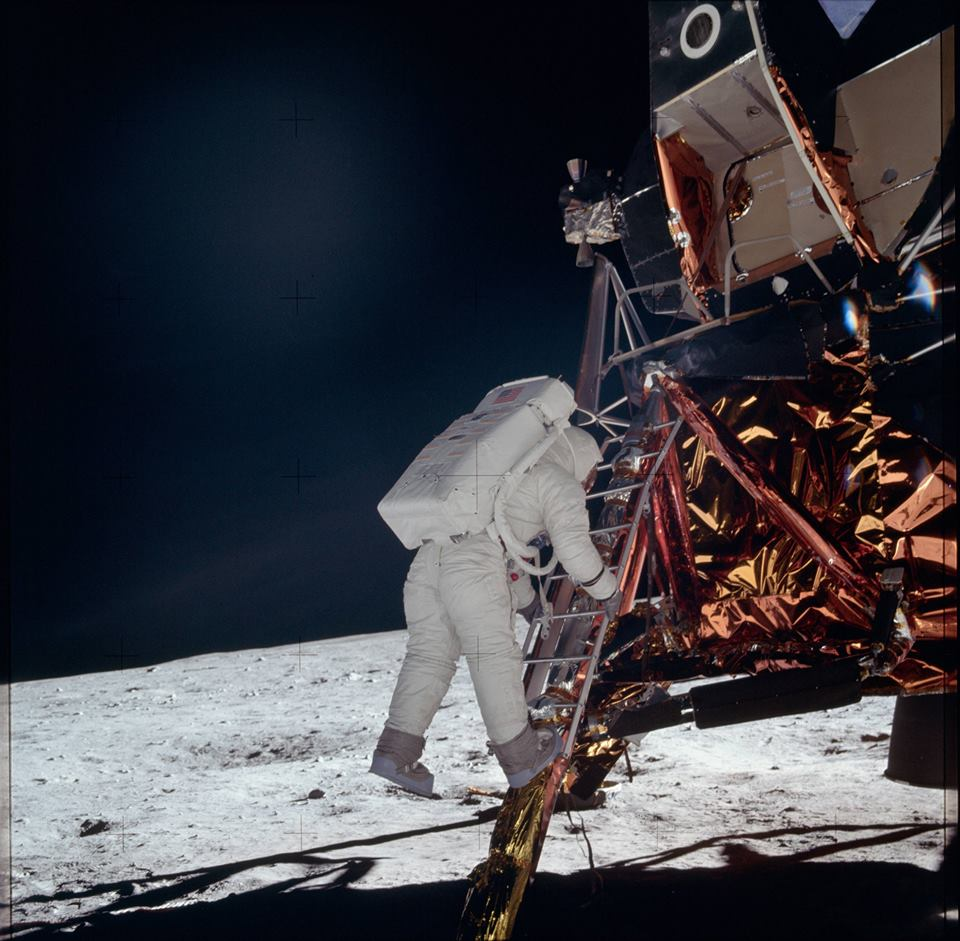
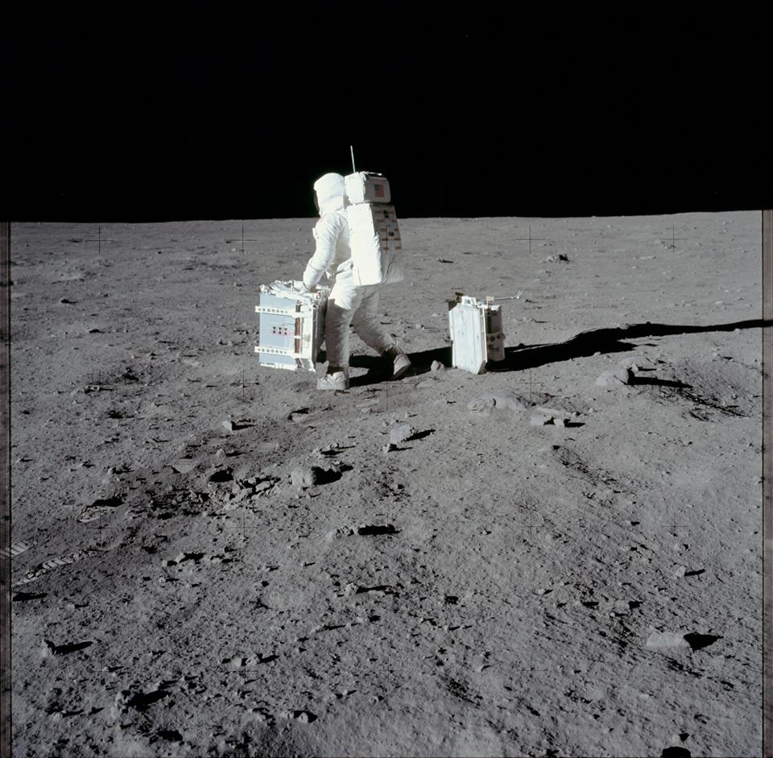
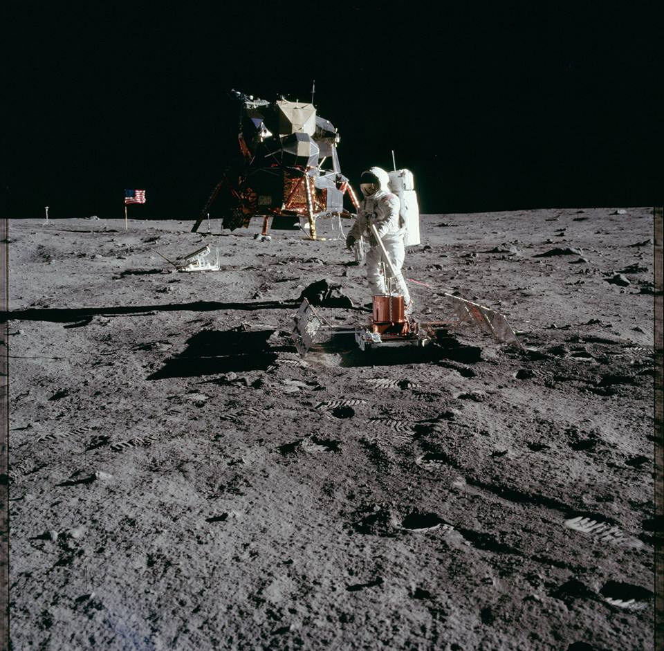

Space Generation Advisory Council (SGAC)
In support of the United Nations Programme on Space Applications



APOG
NEWS
Merger with the SGAC Space Exploration Project Group.
MDRS mission was recycled
Poland mission 2016
APOG
Announcements
SEWG and APO-G have merged
We are pleased to announce that SGAC Space Exploration Project Group (SGAC-SEPG) have merged with the Analog Planetary Operations Group (APO-G) lead by Sebastian Hettrich. APO-G is an international group of students and young professionals dedicated to promote, support and conduct analog planetary research focusing their studies on comparative geology, operational procedures as well as human factors that will affect future crewed missions on planetary surfaces. Analogue studies are addressed in the Global Exploration Roadmap (GER) as one of the essential preparatory activities to extend human presence further into space (International Space Exploration Coordination Group, 2013).
We consider that this merger will benefit both groups; it will increase the scope of our work and pushing us forward new challenges and goals. From now on, both teams will act as one in the meaning that projects from each of the both groups can be attended and assisted by every team member and as such is highly encouraged. We think that this will not only benefit our projects by adding more and different knowledge, views and experiences to them, but also opens new possibilities to learn something new and gain additional experiences in the sense of projects, and also in the exchange among the now highly international team.
As part of the merging plan we have agreed that Sebastian Hettrich becomes one of the co-leads of the project group replacing Marc Dayas Codina. We would like to thank Marc Dayas Codina his work as co-leader and support to the project group from its first conception until now.
We are looking forward to start working together and if you have any questions, suggestions or ideas regarding the merger, on projects or on how to make this work more beneficial, please feel free to contact us.
Sincerely
Damian Bielicky
Abigail Calzada Diaz
Sebastian Hettrich